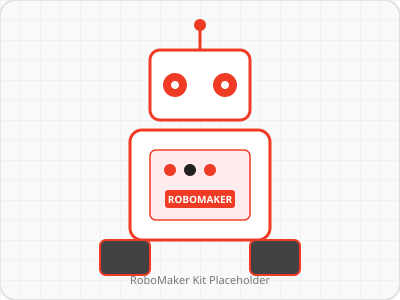

La RoboMaker START, elevii explorează mecatronica și robotica LEGO alături de profesorul Florin Cazac. Înveți să proiectezi mecanisme, angrenaje și să programezi roboți LEGO în mod interactiv!
Fiecare elev parcurge întregul proces de construcție mecanică și programare a roboților LEGO.
Învățăm principiile mecatronice: angrenaje cu roți dințate, pârghii, transmisii și șasiuri robotice stabile din piese LEGO.
Montăm motoarele inteligente, senzorii de culoare, giroscopul și senzorii de distanță pe robotul LEGO.
Scriem algoritmi de navigare, urmărire de linie și evitare a obstacolelor folosind mediul de programare vizuală LEGO.
Rulăm robotul pe trasee speciale, calibrăm senzorii și optimizăm viteză și precizia mișcărilor.
Elevii își testează roboții în provocări amuzante și competiții de mecatronică LEGO organizate în laborator!
Cursuri practice de robotică LEGO cu profesorul Florin Cazac.
Nivelul PRO este dedicat construcției avansate de roboți LEGO, senzoristicii complexe și algoritmilor de navigare autonomă coordonați de profesorul Florin Cazac.
Nivelul CHALLENGE pregătește echipele pentru competițiile naționale și internaționale de robotică LEGO cu misiuni complexe contra cronometru.